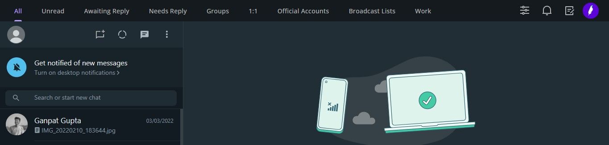

Cooby- Supercharge WhatsApp for Work
April 26, 2022. 3min read
We use WhatsApp on a regular basis, and it has become a part of our daily
routine.
We find it challenging to keep up with all of the discussions we receive. This extension will
immensely aid us in categorising and sorting communications.
Unread, Awaiting reply, Needs reply, Groups, and more categories will appear on the top of the
bar after installing the extension.
A customization option, such as a work category, allows you to personalise or add persons who
are linked to your field of work.

I highly recommend to use this extension and give it a try, Thanks!